Your Flower By Birth Month
Found out which flower is associated with your birth month!
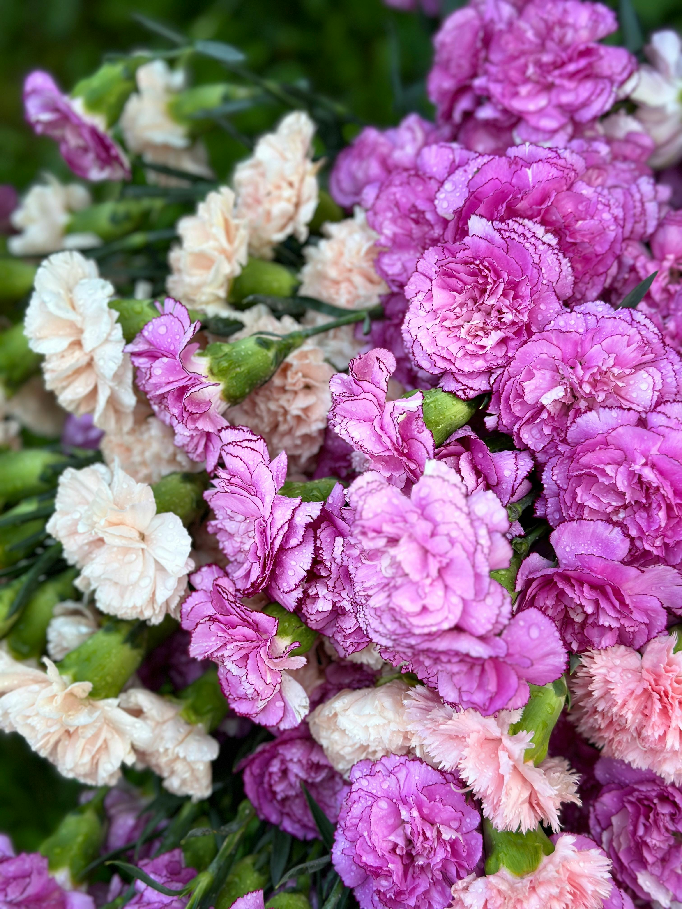
January: Carnation
Carnations grow in a wide variety of colors with a fragrance described as clove-like. Like the rose, carnations symbolize love and affection. Carnations are the most used flower for weddings in China, while in France it is a traditional funeral flower.
{kind=link}
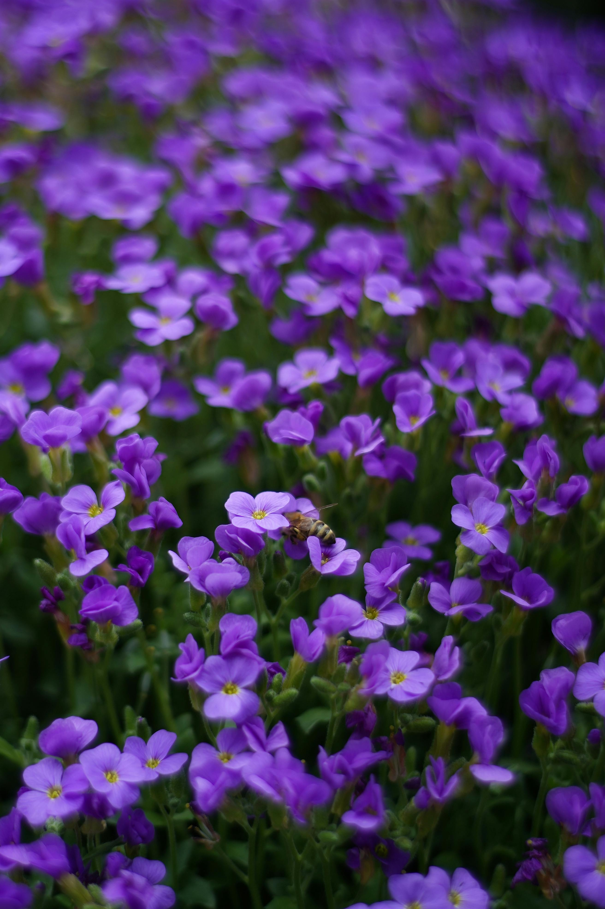
February: Violet
Violets are annual plants which grow in small shrubs in gardens within the Northern Hemisphere. These heart shaped flowers are often used in fragrance or teas and sometimes candies. Traditionally, violet symbolize strength and royalty much like the color violet. Violets also hold an important meaning to queer people as the flower is a symbol of sapphic love.
{kind=link}
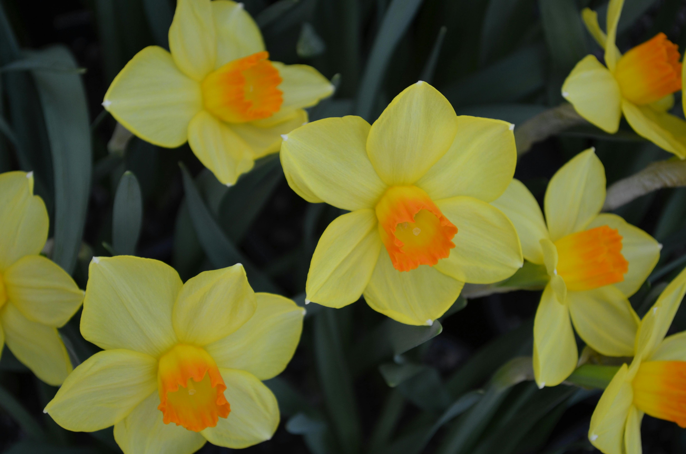
March: Daffodil
Daffodil is a common name for the narcissus genus of these flowers. With it's six petals and trumpet shape center, the daffodil symbolizes birth or renewal, as they are often associated with birthday milestones. Great birthday gift!
{kind=link}
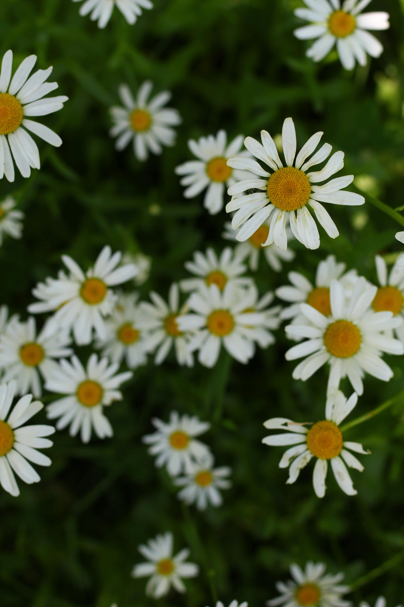
April: Daisy
Often different color flowers have different meanings. For example, the white daisy flower is symbolized with innocence or purity. Yellow means joy and pink means romance or femininity. In the 18th century, daisies were once used medicinally to cure stomach pains and sicknesses.
{kind=link}
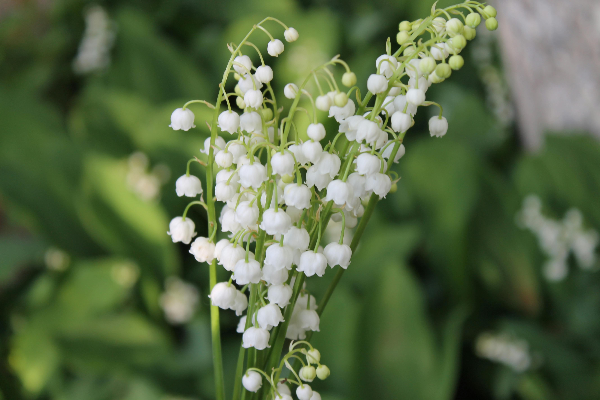
May: Lily of the Valley
This flower is popularly used for weddings and bridal bouquets. In the victorian age, these flowers were known to symbolize returning happiness to others once gifted. While this flower is small and elegant, lily of the valley flowers are poisonous if ingested. Be cautious when handling these flowers!
{kind=link}
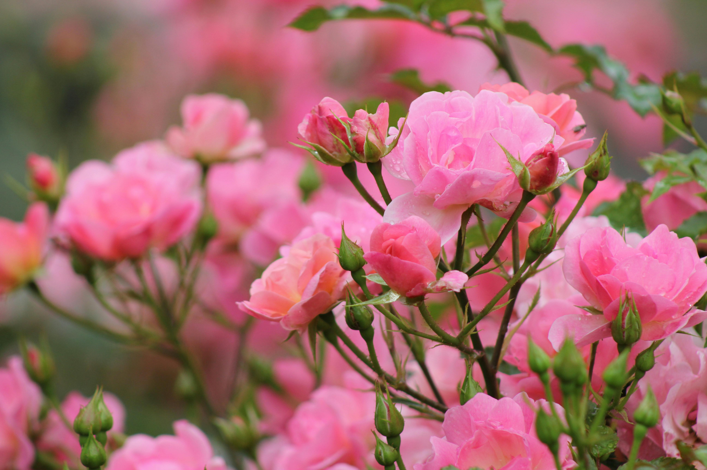
June: Rose
Even though roses are commonly associated with Valentine's Day and love, it is the June birth flower. Like daisies, different color roses have different meanings. Red is love, while yellow is frienship.
{kind=link}
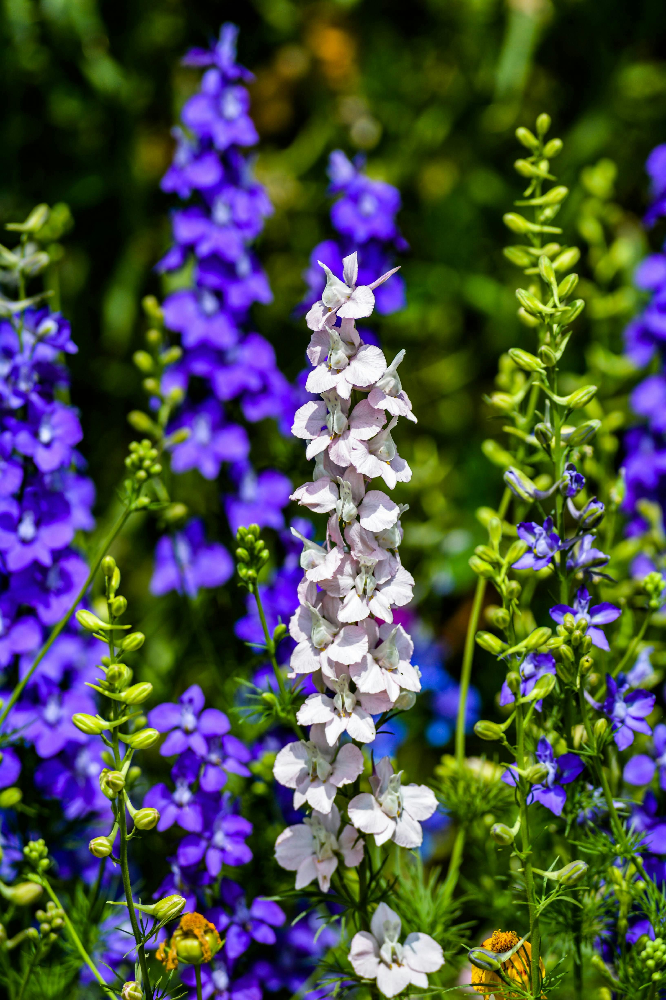
July: Larkspur
Larkspurs have a unique shape and flowery structure. The bloom straight and tall, often in gardens. These flowers symbolize dignity and positivity with their bold colors and strong structures.
{kind=link}
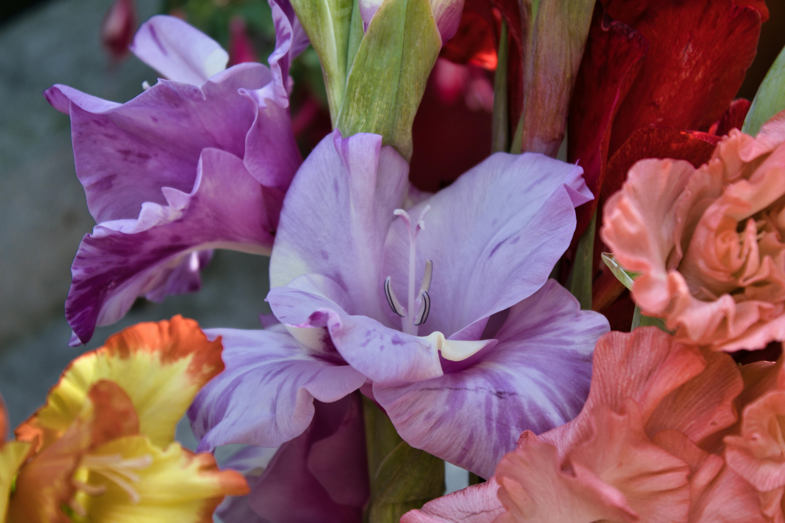
August: Gladiolus
Like it's latin name "gladius" meaning sword, gladiolus flowers symbolize strength, giving the "sword flower" nickname. Now that's strong! These flowers often bloom symmetrically with at least 3 alternating flowers on a single stem.
{kind=link}
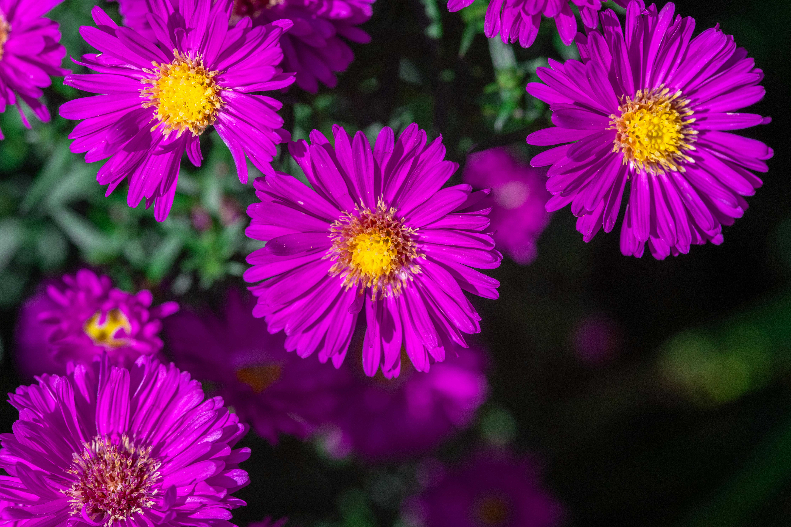
September: Aster
Asters appear very similar to daisies. In fact, they are cousins! Asters signify love and wisdom. The name aster comes from the greek word astḗr meaning "star", like the flower's shape.
{kind=link}
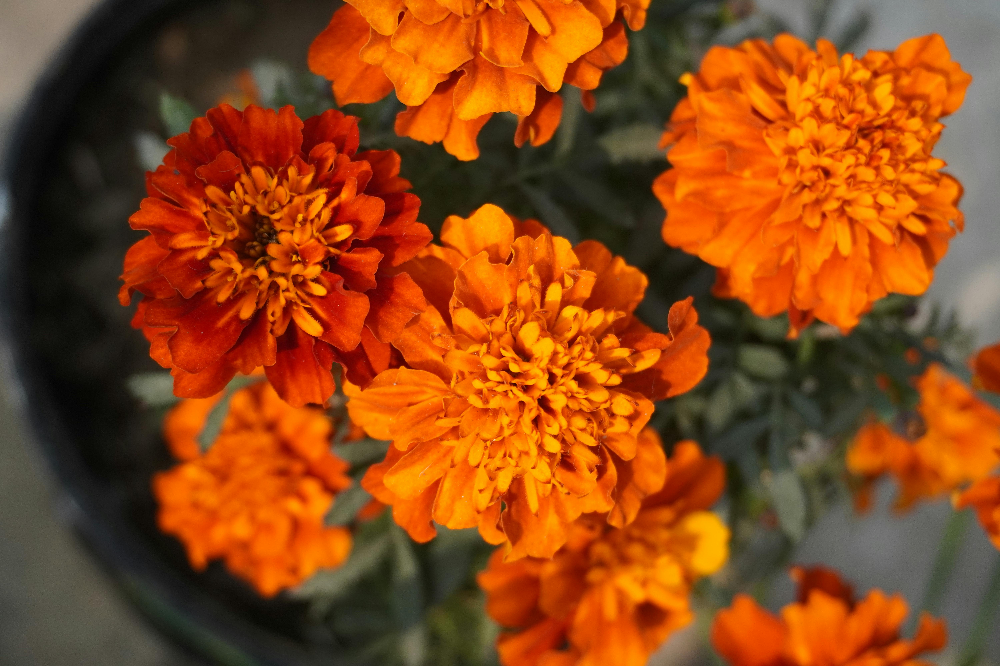
October: Marigold
Marigolds are commonly used in celebrations in Mexico such as Día de Muertos or day of the dead. In which families celebrate in honor of those who have passed with marigolds and sugar skulls. The Aztecs even believed they had magical properties to them. Marigolds were historically used for relieving inflammation as well. These flowers symbolize determination.
{kind=link}
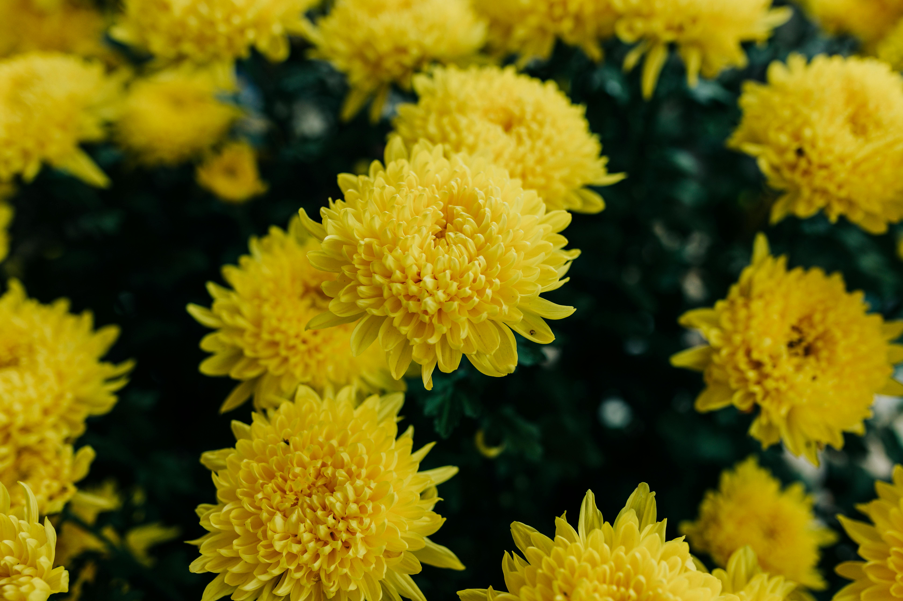
November: Chrysanthemum
Originally native to Asia, chrysanthemums symbolize good luck and happiness to homes. Chrysanthemum Day, a festival in Japan is held in honor of these flowers in the autumnal season when these flowers typically bloom.
{kind=link}
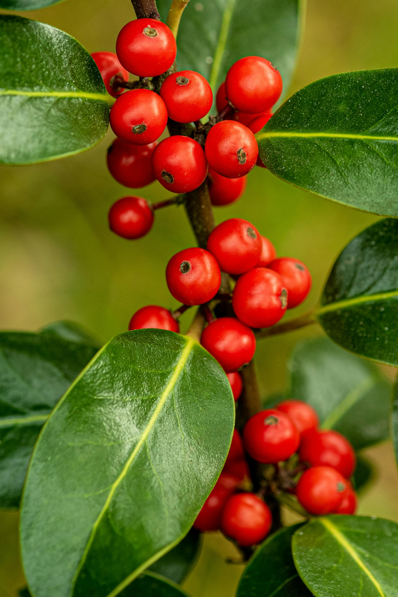
December: Holly
While holly might not be a traditional flower, it is a flowering plant. Holly blooms from small flowers into small red berries. These fruits are slighlt toxic and can cause intensinal issues when ingested. That doesn't sound holly or jolly! Holly is commonly associated with Christmas thus being the birth flower for December. Holly also represents friendship.
{kind=link}